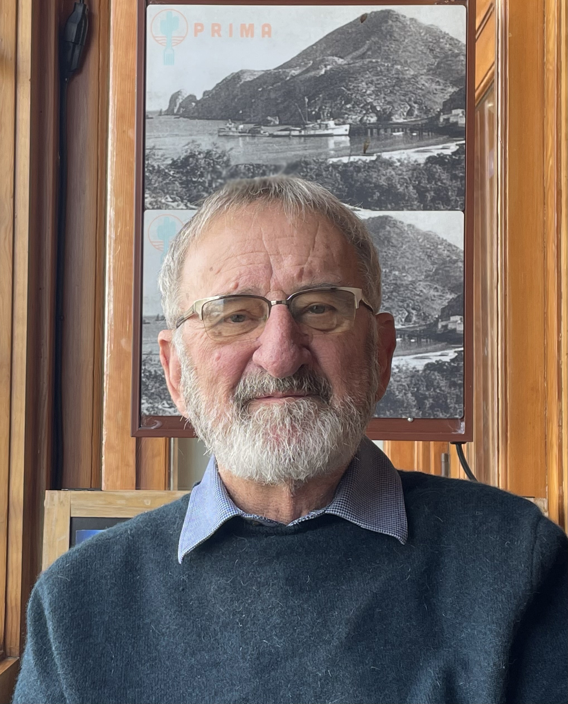
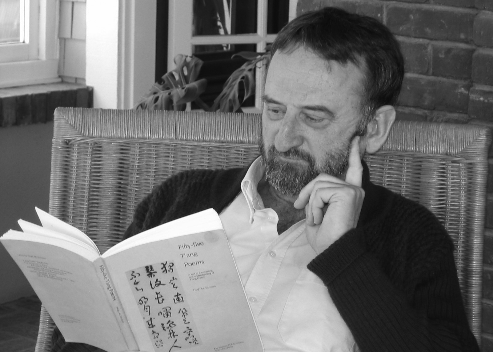

Psychologist, poet, translator

Keith Holyoak is Distinguished Professor of Psychology at the University of California, Los Angeles, and Director of the UCLA Reasoning Lab. Born in Langley, British Columbia, in 1950, he received his B.A. from the University of British Columbia (1971) and his Ph.D. from Stanford University (1976). He taught at the University of Michigan before joining the UCLA faculty in 1986.
Over five decades, Holyoak has produced more than 200 scientific papers and a series of influential books on how humans think. His research centers on analogy—the cognitive capacity to perceive deep relational similarities between things that look nothing alike on the surface. He has shown how analogical reasoning underlies scientific discovery, legal argument, moral judgment, and ordinary conversation. He has also investigated the neural basis of reasoning and the deficits caused by brain damage.
"The word 'psychology' (from its Greek root 'psyche') originally meant 'the study of the soul,' which I suppose might also describe poetry."

Holyoak's lifelong fascination with analogy, metaphor, symbolism, and the mechanisms of creativity led him naturally toward a second vocation as a poet. He writes formal verse — poetry that uses meter and rhyme — treating formal constraint not as a limitation but as a way to accentuate the structured patterns of thought and emotion expressed in poetry.
His four collections of original poems range from intimate personal lyrics to ambitious dramatic monologues: My Minotaur (2010), Foreigner (2012), The Gospel According to Judas (2015), and Oracle Bones (2019, with a second edition forthcoming). He has also translated classical Chinese poetry, producing Facing the Moon (2007, with a second edition forthcoming), a volume of poems by Li Bai and Du Fu. Holyoak treats translation as another kind of analogy, one that depends on finding parallels between the expressive capacities of different languages.
His book The Spider's Thread: Metaphor in Mind, Brain, and Poetry (MIT Press, 2019) stands at the intersection of the two vocations, examining how metaphorical thought arises in the mind and brain and how poets exploit its power. His most recent book, The Human Edge: Analogy and the Roots of Creative Intelligence (MIT Press, 2025) considers the characteristics of thinking that distinguish human intelligence from other varieties, both biological and artificial.
Holyoak's research addresses fundamental questions about human cognition: How do people recognize that two situations are "the same" in some deep, structural sense even when they look entirely different? How does this capacity fuel scientific creativity, legal reasoning, language, and moral thought?
His work combines behavioral experiments, computational modeling, and cognitive neuroscience. He has studied analogical reasoning across the lifespan, including in children and in patients with brain damage. He has developed influential computational models of how relational knowledge is acquired and used.
His most recent book, The Human Edge (2025), synthesizes this lifetime of work and turns it toward a pressing contemporary question: what, if anything, do humans do that artificial intelligence cannot—and why?